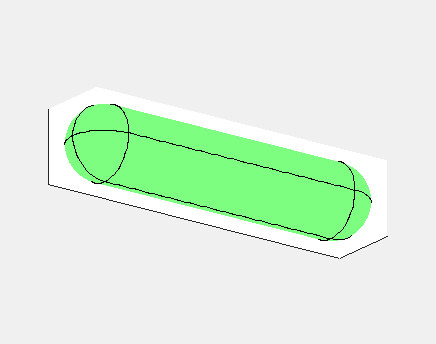
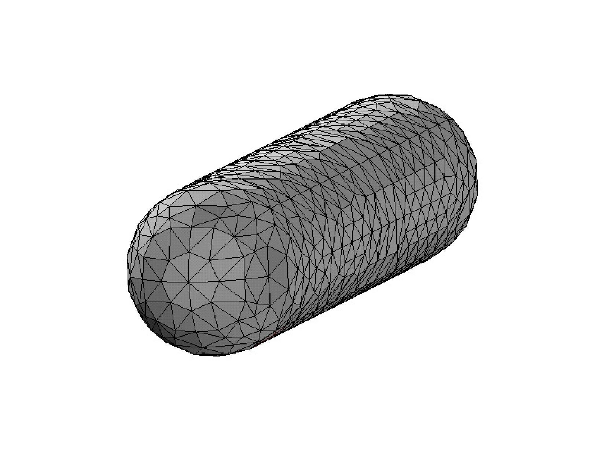
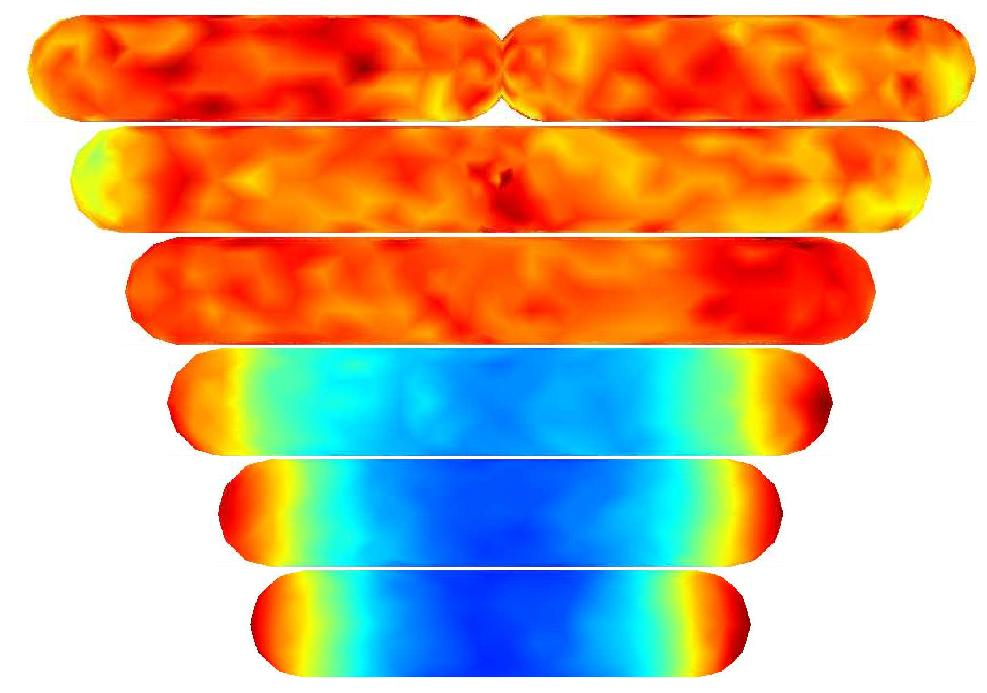

URDME simulating stochastic spatial kinetics


In E. Coli, the Min family of proteins are believed to play a
key role in the regulation of symmetric cell division. In a mechanism
thought to be self-organized and to function in a manner similar to
the formation of Turing-patterns, the MinD protein oscillates from
pole to pole with a period close to 40 seconds. Another Min protein,
MinC, co-localizes with MinD and acts as a repressor for the formation
of the cell division site by destabilizing a polymerization. On
average, MinD (and hence MinC) will spend less time near the center
of the cell, allowing the division ring to assemble there.
In the simulation animated above a uniform random initial distribution
of protein was used. After some time regular oscillations were
obtained. In the figure below a series of simulations on bacteria of
increasing length have been performed. It can clearly be seen that the
oscillations stop abruptly at a certain length. If oscillations should
be sustained, some additional effect or term should therefore enter in
the model.

References
The numerical method employed in the simulation was described
in S. Engblom, L. Ferm, A. Hellander, Lötstedt: Simulation
of Stochastic Reaction-Diffusion Processes on Unstructured
Meshes , in SIAM J. Sci. Comput. 31(3):1774--1797,
2009: (doi).
The URDME software was further discussed in B. Drawert,
S. Engblom, and A. Hellander: URDME: a modular framework for
stochastic simulation of reaction-transport processes in complex
geometries in BMC Syst. Biol. 6(76):1--17,
2012: (doi).
Stefan Engblom
Last modified: Fri Sep 6 14:47:10 CEST 2024